Archive — games, tools, research, experiments
Que is a prototype-targeted Unreal Engine developer environment manager with Git, GitHub, GitLFS, and SyncThing integration. Onboard developers in minutes not days, and run your entire UE5 game team on a $5/mo LFS plan!
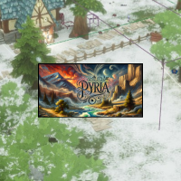
Pyria is a multiplayer ARPG in Unreal built from the ground up with AI-assisted tools.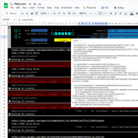
Platycore, my framework for Google Apps Script, installs and runs apps using Sheets as a platform, database, UI and IDE solution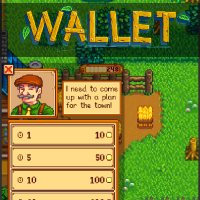
To make budgeting fun for myself, this Stardew Valley-themed mobile wallet rewards tracking spending with in-game items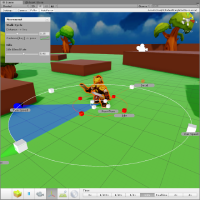
This Unity Editor tools demo shows the power of an intuitive interface with live feedback for character/controls/camera (3 C's) design iteration I championed and implemented gameplay tools for designers on League of Legends: Wild Rift and led the cross-studio Developer Efficiency team.
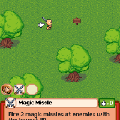
Ominex is my prototype multiplayer pixel-art RPG in Unity built around an experimental movement system for extremely-high-latency mobile devices. I was Technical Director at Jolly until we were acquired by Riot Games in 2016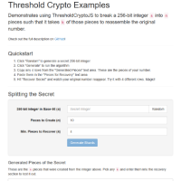
ThresholdJS implements Shamir's Secret Sharing algorithm for Bitcoin private keys (256-bit integers)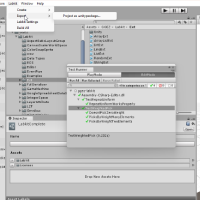
Labkit is a utility library to jumpstart a Unity project with features games commonly need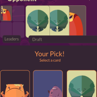
Mini Mutants is my War Storm-inspired autobattler card game
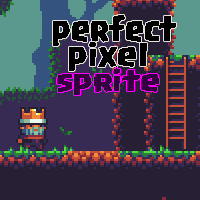
I wrote Perfect Pixel Sprite to fix texture spilling issues for pixel-art games caused by subpixel offsets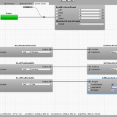
Golem is a Unity extension that integrates visual coding, state machines and data flow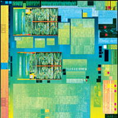
I wrote a tool that saved Intel 6+ months of logic redesign due to routing issues with the Silvermont (Atom Z3735E) processor. You can see its work in this die shot!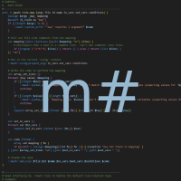
Mashtag (M#tag) is a filesystem-based declarative data engine for error-tolerant bulk test result processing built in TCL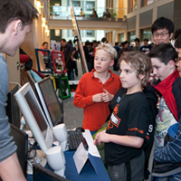
I presented Evidyon at Cornell's annual Bits On Our Minds (BOOM) 2010 event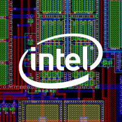
At Intel, I supported internal EDA software (TCL/C) for 30+ design engineers I wrote Cryptasia to manage my passwords and used it daily for many years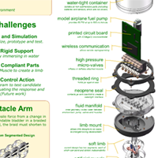
My undergraduate research with Prof. Hod Lipson developed a soft-bodied octopus robot using McKibben muscles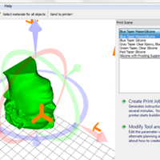
I led a 6-person team writing cross-platform 3D printer software for one of the first open-source 3d printers, the Fab@Home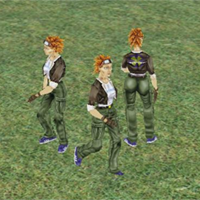
My Network Game Skeleton is an open-source minimal networked 3d video game using DirectX 9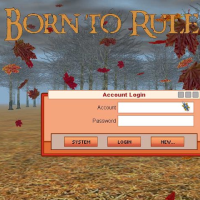
I learned C++ & DirectX by starting work on the MMO Born to Rule in middle school. Only took until graduation to run around in a 3d world together!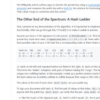
My independent cryptography research paper Hash Ladders for Shorter Lamport Signatures re-discovered the Winternitz approach to quantum computing resistant digital signatures.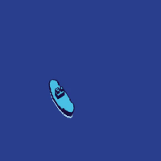
This repo showcases sprite stacks, a nifty minimalist style for faking 3d objects using 2d sprites.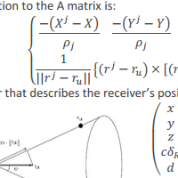
Lab partners and I implemented a novel approach to geolocation combining Doppler shift and pseudorange that works with fewer than 4 GPS satellites.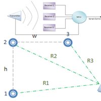
I wrote the code for a $50 ultrasound-based 3D positioning device with the ATmega microcontroller